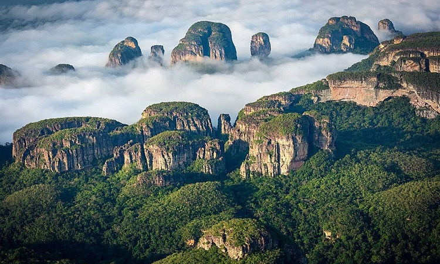

Galería de Imágenes

Descripción
La Serranía de Chiribiquete es un parque nacional natural en el Caquetá, conocido por sus tepuyes y arte rupestre. Es un lugar de gran biodiversidad y belleza escénica, ideal para los amantes de la naturaleza y la aventura.